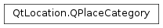

QPlaceCategory¶
Synopsis¶
Functions¶
- def
__eq__(other) - def
__ne__(other) - def
categoryId() - def
icon() - def
isEmpty() - def
name() - def
setCategoryId(identifier) - def
setIcon(icon) - def
setName(name)
Detailed Description¶
The
PySide2.QtLocation.QPlaceCategoryclass represents a category that aPySide2.QtLocation.QPlacecan be associated with.Categories are used to search for places based on the categories they are associated with. The list/tree of available categories can be obtained from
PySide2.QtLocation.QPlaceManager. TheQPlaceSearchRequest.setCategories()function can be used to limit the search results to places with the specified categories.If the
PySide2.QtLocation.QGeoServiceProvidersupports it, categories can be created and removed. This functionality is available in thePySide2.QtLocation.QPlaceManagerclass.
-
class
PySide2.QtLocation.QPlaceCategory¶ -
class
PySide2.QtLocation.QPlaceCategory(other) Parameters: other – PySide2.QtLocation.QPlaceCategoryConstructs a category.
Constructs a category which is a copy of
other.
-
PySide2.QtLocation.QPlaceCategory.categoryId()¶ Return type: unicode Returns the identifier of the category. The category identifier is a string which uniquely identifies this category within a particular
PySide2.QtLocation.QPlaceManager. The identifier is only meaningful to thePySide2.QtLocation.QPlaceManagerthat generated it and is not transferable between managers.
-
PySide2.QtLocation.QPlaceCategory.icon()¶ Return type: PySide2.QtLocation.QPlaceIconReturns the icon associated with the category.
-
PySide2.QtLocation.QPlaceCategory.isEmpty()¶ Return type: PySide2.QtCore.boolReturns a boolean indicating whether the all the fields of the place category are empty or not.
-
PySide2.QtLocation.QPlaceCategory.name()¶ Return type: unicode Returns the name of category.
-
PySide2.QtLocation.QPlaceCategory.__ne__(other)¶ Parameters: other – PySide2.QtLocation.QPlaceCategoryReturn type: PySide2.QtCore.boolReturns true if
otheris not equal to this category; otherwise returns false.
-
PySide2.QtLocation.QPlaceCategory.__eq__(other)¶ Parameters: other – PySide2.QtLocation.QPlaceCategoryReturn type: PySide2.QtCore.boolReturns true if
otheris equal to this category; otherwise returns false.
-
PySide2.QtLocation.QPlaceCategory.setCategoryId(identifier)¶ Parameters: identifier – unicode Sets the
identifierof the category.
-
PySide2.QtLocation.QPlaceCategory.setIcon(icon)¶ Parameters: icon – PySide2.QtLocation.QPlaceIconSets the
iconof the category.
-
PySide2.QtLocation.QPlaceCategory.setName(name)¶ Parameters: name – unicode Sets the
nameof the category.
© 2018 The Qt Company Ltd. Documentation contributions included herein are the copyrights of their respective owners. The documentation provided herein is licensed under the terms of the GNU Free Documentation License version 1.3 as published by the Free Software Foundation. Qt and respective logos are trademarks of The Qt Company Ltd. in Finland and/or other countries worldwide. All other trademarks are property of their respective owners.